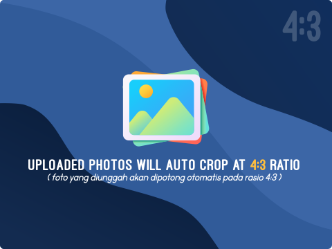
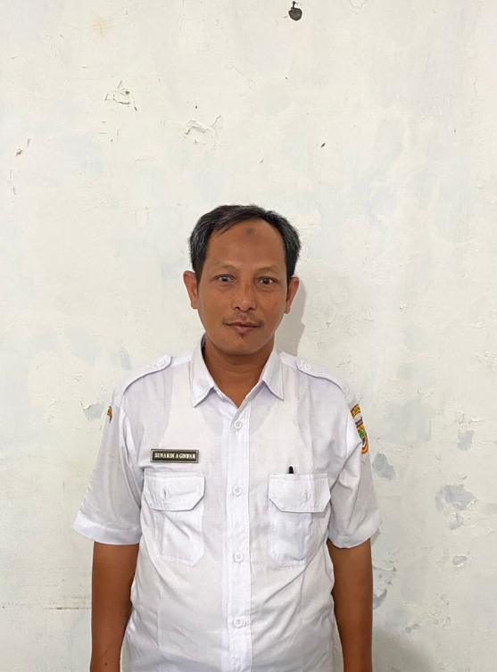
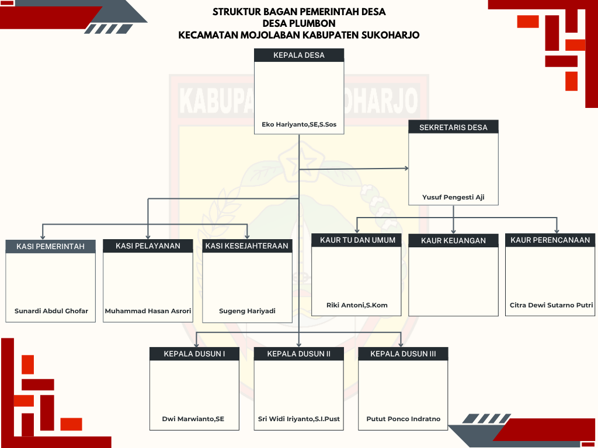
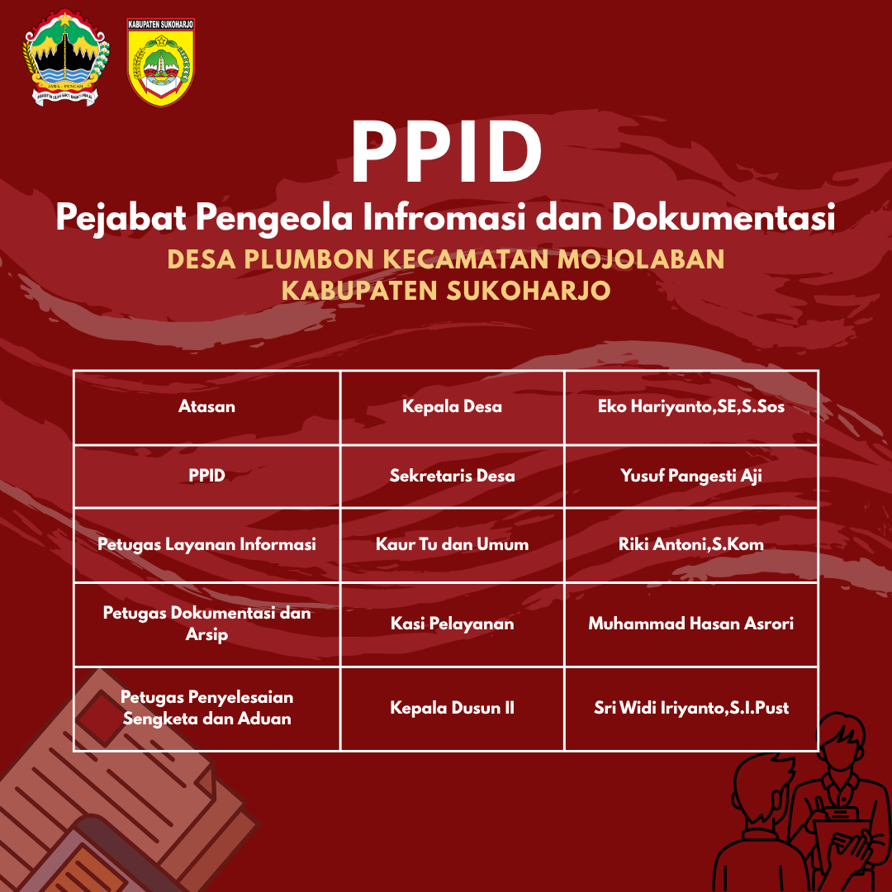

Pemerintahan & Kelembagaan Desa Plumbon
Visi & Misi RPJMDes 2022–2028, Susunan 9 Aparatur Pemerintahan, Struktur PPID, serta Sinergi Lembaga Kemasyarakatan
Visi & Misi Desa Plumbon
Arah kebijakan pembangunan jangka menengah (RPJMDes 2022–2028) Pemerintah Desa Plumbon.
Visi Utama:
"MENJADI DESA YANG BERDAYA, MODERN, TRANSPARAN DAN RELIGIUS"
- Berdaya: Kemandirian masyarakat dalam mengelola potensi pertanian 147 Ha, peternakan, dan UMKM lokal.
- Modern: Pemanfaatan teknologi Sistem Informasi Desa (SID) dalam pelayanan administrasi dan tata kelola data.
- Transparan: Keterbukaan informasi publik (PPID), matriks program pembangunan, dan akuntabilitas APBDes.
- Religius: Kehidupan masyarakat yang berlandaskan iman, takwa, dan kerukunan sosial budaya.
Misi Pokok Pemerintah Desa Plumbon:
-
Reformasi Pelayanan Publik Modern: Menyelenggarakan pelayanan administrasi kependudukan yang cepat, tepat, ramah, gratis, dan berbasis teknologi informasi.
-
Transparansi APBDes & PPID Desa: Mewujudkan keterbukaan anggaran desa, publikasi matriks kegiatan tahunan, serta pelayanan informasi publik melalui PPID Desa Plumbon.
-
Pemberdayaan Ekonomi & Ketahanan Pangan: Menguatkan produktivitas pertanian lahan sawah 147 Ha, irigasi pertanian, peternakan rakyat, dan wirausaha warga.
-
Pemerataan Infrastruktur Wilayah: Meningkatkan kualitas jalan lingkungan, drainase, dan fasilitas umum di wilayah Kebayanan 1 dan Kebayanan 2 secara berkesinambungan.
-
Pembangunan Sumber Daya Manusia & Kesehatan: Mendukung layanan Posyandu, pendidikan anak usia dini, pencegahan stunting, serta kemitraan bersama perguruan tinggi (KKN).
-
Pembinaan Mental Spiritual & Budaya Luhur: Memfasilitasi kegiatan keagamaan, melestarikan sejarah Hari Lahir Desa Palumbon (1741 M), dan memperkokoh gotong royong warga.
Eko Hariyanto, S.E., S.Sos.
Kepala Desa Plumbon, Kec. Mojolaban
Masa Jabatan 2022–2030Profil Kepemimpinan & Legalitas Jabatan Kepala Desa
Bapak Eko Hariyanto, S.E., S.Sos. bersama Sekretaris Desa Yusuf Pangesti Aji dan seluruh perangkat desa aktif mendorong keterbukaan informasi publik melalui PPID Desa Plumbon, publikasi matriks program pembangunan tahunan secara terbuka, serta pelestarian tradisi sejarah Desa Palumbon 1741 M.
Struktur Organisasi Pemerintah Desa
Susunan 9 aparatur Pemerintah Desa Plumbon berdasarkan SOTK Permendagri No. 84 Tahun 2015 beserta bagan organisasi dan PPID resmi.
Profil & Foto Pamong Desa Aktif
Dokumentasi resmi aparatur Pemerintah Desa Plumbon bersumber langsung dari plumbon-sukoharjo.desa.id/struktur
EKO HARIYANTO, S.E., S.Sos.
KEPALA DESA PLUMBON"Mewujudkan Desa Plumbon yang Berdaya, Modern, Transparan, dan Religius"

YUSUF PANGESTI AJI
SEKRETARIS DESA"Sinergi administrasi pemerintahan dan keterbukaan informasi publik"
RIKI ANTONI, S.Kom.
KAUR TU DAN UMUM"Modernisasi tata kelola persuratan dan layanan digital desa"

CITRA DEWI SUTARNO PUTRI
KAUR PERENCANAAN"Perencanaan pembangunan desa yang terukur, partisipatif, dan akuntabel"

SUNARDI ABDUL GHOFAR
KASI PEMERINTAHAN"Tertib administrasi kependudukan dan tata praja pemerintahan desa"
MUHAMMAD HASAN ASRORI
KASI PELAYANAN"Melayani kebutuhan administrasi dan sosial keagamaan warga dengan ramah"
SUGENG HARIYADI
KASI KESEJAHTERAAN (KESRA)"Mengawal pembangunan fisik dan kesejahteraan sosial masyarakat"

DWI MARWIANTO, S.E.
KEPALA DUSUN 1 (KEBAYANAN 1)"Menjaga keguyuban dan ketertiban warga wilayah Kebayanan 1"
SRI WIDI IRIYANTO, S.Pust.
KEPALA DUSUN 2 (KEBAYANAN 2)"Menyerap aspirasi dan menggerakkan gotong royong warga Kebayanan 2"
Daftar Urut Jabatan Aparatur Pemerintah Desa Plumbon
Sesuai Permendagri No. 84 Tahun 2015 & Terverifikasi Portal Resmi Desa (plumbon-sukoharjo.desa.id)
| Unsur Struktur / Jabatan | Nama Pejabat / Pamong Desa | Klasifikasi Tugas | Status Jabatan |
|---|---|---|---|
| Kepala Desa Plumbon | EKO HARIYANTO, S.E., S.Sos. | Pimpinan Penyelenggara Pemerintahan | Definitif (2022–2030) |
| Sekretaris Desa |
YUSUF PANGESTI AJI
|
Pimpinan Sekretariat & Koordinator PPID | Aparatur Aktif |
| Kaur TU dan Umum | RIKI ANTONI, S.Kom. | Sekretariat (Kearsipan, Surat & SID) | Aparatur Aktif |
| Kaur Perencanaan | CITRA DEWI SUTARNO PUTRI | Sekretariat (Program RKPDes & Matriks) | Aparatur Aktif |
| Kasi Pemerintahan | SUNARDI ABDUL GHOFAR | Pelaksana Teknis (Adminduk & Pertanahan) | Aparatur Aktif |
| Kasi Pelayanan | MUHAMMAD HASAN ASRORI | Pelaksana Teknis (Layanan Warga & Agama) | Aparatur Aktif |
| Kasi Kesejahteraan (Kesra) | SUGENG HARIYADI | Pelaksana Teknis (Pembangunan & Kesra) | Aparatur Aktif |
| Kepala Dusun 1 (Kebayanan 1) |
DWI MARWIANTO, S.E.
|
Pelaksana Kewilayahan Kebayanan 1 | Kepala Dusun |
| Kepala Dusun 2 (Kebayanan 2) | SRI WIDI IRIYANTO, S.Pust. | Pelaksana Kewilayahan Kebayanan 2 | Kepala Dusun |


Klik gambar untuk melihat bagan Struktur Organisasi Pemerintah Desa Plumbon resolusi penuh.

Klik gambar untuk melihat bagan Struktur PPID Desa Plumbon (Keterbukaan Informasi Publik).Tugas & Fungsi Pemerintahan
Uraian tugas pokok dan wewenang perangkat Desa Plumbon dalam penyelenggaraan pemerintahan desa.
1. Kepala Desa (Eko Hariyanto, S.E., S.Sos.)
Memimpin penyelenggaraan Pemerintahan Desa Plumbon, pelaksanaan pembangunan, pembinaan kemasyarakatan, dan pemberdayaan masyarakat:
- Menetapkan Peraturan Desa (Perdes) bersama Badan Permusyawaratan Desa (BPD).
- Menyusun dan menetapkan APBDes serta matriks pelaksanaan kegiatan pembangunan desa setiap tahun anggaran.
- Bertindak sebagai Pejabat Pembina PPID Desa Plumbon dalam menjamin keterbukaan informasi publik.
- Membina ketenteraman, ketertiban, serta kemajuan ekonomi pertanian dan UMKM warga.
2. Sekretaris Desa (Yusuf Pangesti Aji)
Memimpin Sekretariat Desa Plumbon dan mengoordinasikan administrasi pemerintahan, perencanaan, serta layanan PPID:
- Melaksanakan urusan ketatausahaan, tata naskah dinas, kearsipan, dan pelaporan pemerintahan desa.
- Mengoordinasikan penyusunan dokumen RPJMDes, RKPDes, dan pertanggungjawaban pelaksanaan APBDes.
- Mengelola layanan Pejabat Pengelola Informasi dan Dokumentasi (PPID) Desa Plumbon.
3. Unsur Sekretariat (Kaur)
Membantu Sekretaris Desa dalam layanan administrasi dan perencanaan:
- Kaur TU & Umum (Riki Antoni, S.Kom.): Pengelolaan persuratan, kearsipan, aset desa, dan operasional Sistem Informasi Desa.
- Kaur Perencanaan (Citra Dewi Sutarno Putri): Penyusunan RKPDes, matriks program tahunan, dan evaluasi data pembangunan.
4. Pelaksana Teknis (Kasi)
Unsur pelaksana operasional teknis di lapangan:
- Kasi Pemerintahan (Sunardi Abdul Ghofar): Administrasi kependudukan, pertanahan, dan ketertiban lingkungan.
- Kasi Pelayanan (Muhammad Hasan Asrori): Pelayanan surat pengantar warga, pembinaan keagamaan, dan sosial budaya.
- Kasi Kesra (Sugeng Hariyadi): Pelaksanaan pembangunan infrastruktur, pertanian, dan bantuan kesejahteraan sosial.
5. Pelaksana Kewilayahan (Kebayanan)
Membantu Kepala Desa di wilayah Kebayanan 1 (Dwi Marwianto, S.E.) dan Kebayanan 2 (Sri Widi Iriyanto, S.Pust.):
- Pembinaan kerukunan warga, ketertiban RT/RW, dan gotong royong masyarakat di tingkat kebayanan/dusun.
- Penyerapan aspirasi masyarakat pada Musdus untuk diusulkan ke Musrenbangdes.
Transparansi APBDes, Matriks Program & Desa Antikorupsi
Komitmen keterbukaan informasi publik Pemerintah Desa Plumbon melalui publikasi Matriks Program Pembangunan dan Papan Informasi PPID.
Fokus Program & Pengelolaan APBDes
Matriks Program 2026Pemerintah Desa Plumbon secara rutin menerbitkan Matriks Program Pembangunan Desa dan laporan realisasi anggaran pada Papan Informasi Publik Balai Desa serta website resmi SID:
| Bidang Pembangunan & Anggaran | Program Prioritas Desa Plumbon | Status PPID |
|---|---|---|
| 1. Penyelenggaraan Pemerintahan | Operasional pelayanan warga, SID, & keterbukaan PPID | Terbuka |
| 2. Pembangunan Infrastruktur & Tani | Pemeliharaan jalan desa, talud/irigasi sawah 147 Ha, & drainase | Terbuka |
| 3. Pembinaan Kemasyarakatan | Peringatan Harlah Desa 1741 M, kepemudaan, & keagamaan | Terbuka |
| 4. Pemberdayaan Masyarakat | Posyandu, pencegahan stunting, PKK, & ketahanan pangan | Terbuka |
| 5. Penanggulangan Bencana & Mendesak | BLT Dana Desa & kesiapsiagaan kawasan tepian Bengawan Solo | Terbuka |
Implementasi Desa Antikorupsi & PPID
Visi Desa TransparanSebagai wujud nyata misi "Transparan" dalam RPJMDes 2022–2028, Pemerintah Desa Plumbon mengoptimalkan 5 indikator tata kelola bersih:
Lembaga Kemasyarakatan Desa
Sinergi kelembagaan masyarakat Desa Plumbon dalam mengawal demokrasi, pembangunan, dan pemberdayaan warga.
BPD (Badan Permusyawaratan Desa)
Mitra PemerintahanLembaga permusyawaratan Desa Plumbon yang membahas dan menyepakati Rancangan Peraturan Desa bersama Kepala Desa serta mengawasi kinerja penyelenggaraan pemerintahan desa.
- Menyelenggarakan Musyawarah Desa (Musdes) penyusunan RKPDes dan APBDes.
- Menampung dan menyalurkan aspirasi masyarakat Kebayanan 1 dan Kebayanan 2.
Tim Penggerak PKK Desa Plumbon
Pemberdayaan KeluargaMenggerakkan 10 Program Pokok PKK, layanan Posyandu Balita & Lansia, serta peningkatan keterampilan ekonomi keluarga di Desa Plumbon.
- Pelayanan Posyandu rutin, pemantauan tumbuh kembang balita, dan pemberian makanan tambahan (PMT).
- Pemberdayaan perempuan, pembinaan UP2K, dan edukasi kesehatan lingkungan bersama mahasiswa KKN.
Karang Taruna
Generasi MudaWadah kreativitas pemuda-pemudi Desa Plumbon dalam kegiatan olahraga, seni budaya, peringatan HUT RI, serta malam tirakatan Hari Lahir Desa Palumbon.
LPMD
PembangunanLembaga Pemberdayaan Masyarakat Desa yang mengoordinasikan partisipasi gotong royong warga dalam pembangunan infrastruktur jalan, talud, dan saluran irigasi pertanian.
Satlinmas Desa Plumbon
Keamanan & SiagaSatuan Perlindungan Masyarakat yang menjaga keamanan lingkungan, ketertiban kegiatan warga, serta kesiapsiagaan tanggap darurat di kawasan tepian Sungai Bengawan Solo.